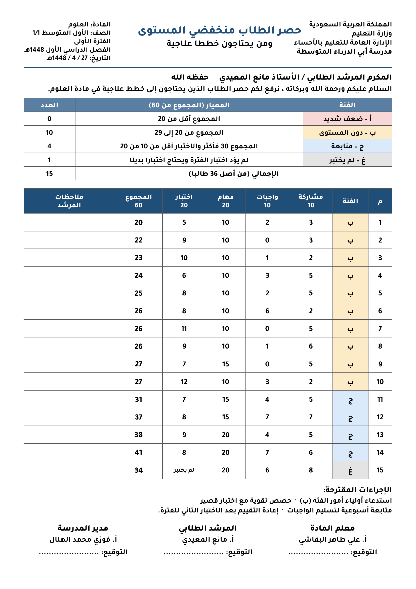
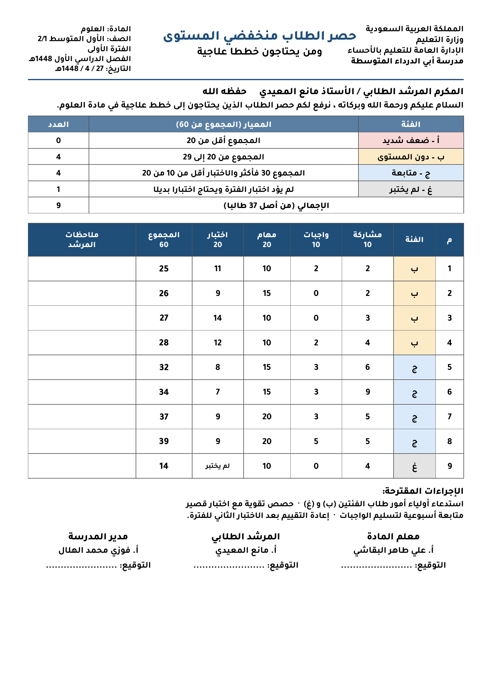
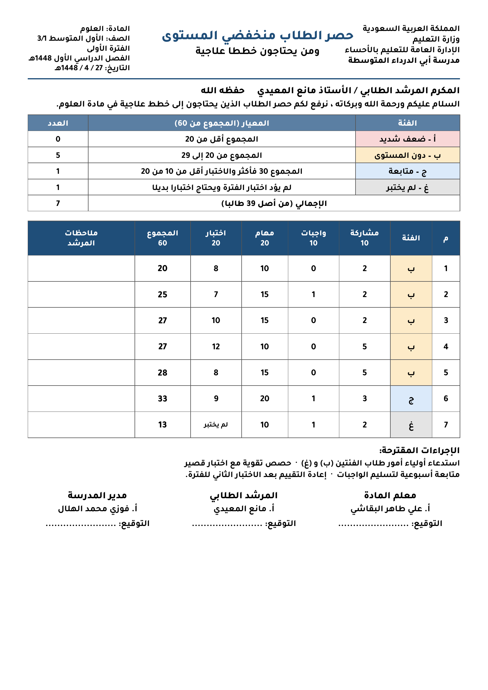
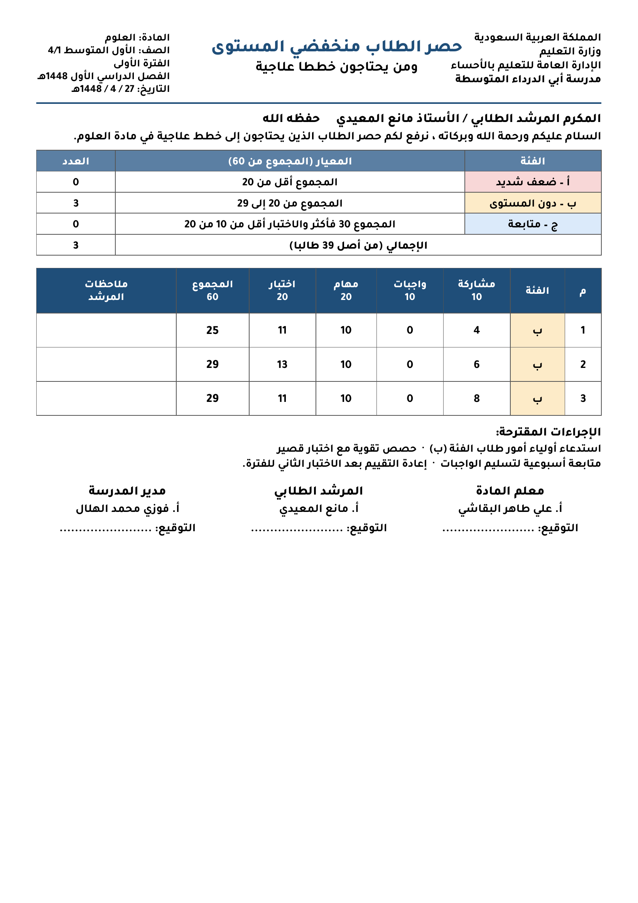

الشاهد 51 — حصر الطلاب منخفضي المستوى — الفصل 1/1
عدد المحصورين 15 من 36 طالباً · التوزيع: (ب) 10 · (ج) 4 · (غ) 1

المعيار العاشر: تحليل نتائج المتعلمين وتشخيص مستوياتهم • مادة العلوم • الأول المتوسط (1/1 – 4/1) • الفترة الأولى – الفصل الدراسي الأول 1448هـ • نسخ بدون أسماء الطلاب حفاظاً على خصوصيتهم
صُنّف الطلاب وفق سجل المتابعة (المشاركة 10، الواجبات 10، المهام الأدائية 20، الاختبار 20، المجموع 60) إلى فئات: (أ) ضعف شديد – المجموع أقل من 20، (ب) دون المستوى – من 20 إلى 29، (ج) متابعة – 30 فأكثر والاختبار أقل من 10، (غ) لم يؤدِّ اختبار الفترة. ورُفع الحصر إلى المرشد الطلابي بتاريخ 27 / 4 / 1448هـ تمهيداً لبناء الخطط العلاجية.
| الفصل | عدد الطلاب | المحصورون | التوزيع على الفئات |
|---|---|---|---|
| الأول المتوسط 1/1 | 36 | 15 | (ب) 10 · (ج) 4 · (غ) 1 |
| الأول المتوسط 2/1 | 37 | 9 | (ب) 4 · (ج) 4 · (غ) 1 |
| الأول المتوسط 3/1 | 39 | 7 | (ب) 5 · (ج) 1 · (غ) 1 |
| الأول المتوسط 4/1 | 39 | 3 | (ب) 3 |
| الإجمالي | 151 | 34 | (أ) 0 · (ب) 22 · (ج) 9 · (غ) 3 |
عدد المحصورين 15 من 36 طالباً · التوزيع: (ب) 10 · (ج) 4 · (غ) 1

عدد المحصورين 9 من 37 طالباً · التوزيع: (ب) 4 · (ج) 4 · (غ) 1

عدد المحصورين 7 من 39 طالباً · التوزيع: (ب) 5 · (ج) 1 · (غ) 1

عدد المحصورين 3 من 39 طالباً · التوزيع: (ب) 3
